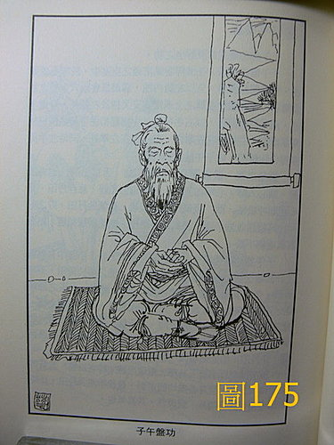

武術 47：武當功法部分資料
這些資料是用來說明 藥王脈學第 82 條 脈合按摩導引的資料
〈圖169 ～ 179〉〈少林72藝與武當36功‧裴錫榮、吳忠賢編著‧大展出版社‧北京人民體育出版社授權繁體版〉。武當功法大都軟硬相合，小循環功即小周天之類，混元樁、搓掌功都是健身功法，混元功即排打功，地龍功即用單腳蹲下起立，讀者可自己試試看自己的腿勁夠不夠強韌，可否做出這樣的動作，這招是用來平常訓練保本，防止到老腿弱或治療老人的腰腿軟弱，兩儀球是用來靈活手指，並可以當暗器使用，太極球甚妙，動靜氣功相合又練臂指的勁道和黏勁，練時動作要慢，運丹田之氣，力由腳而生，由腰而傳遞出去，四處都是劃太極圓圈而練，那個球越練越大，若能練至數十斤的木球，如玩彈丸在手上身上自由轉動滾動旋轉，雙掌不但力大，而且手軟如黏膠，對方力氣雖大，被我黏住者鮮能逃脫，這是練太極拳勁法的密招。
